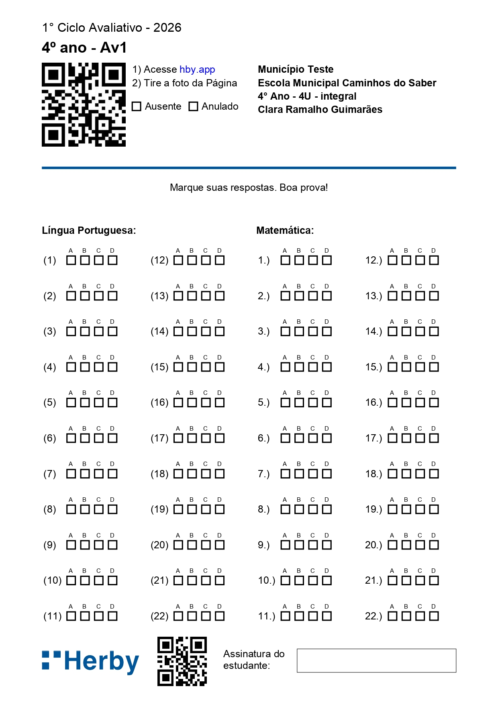
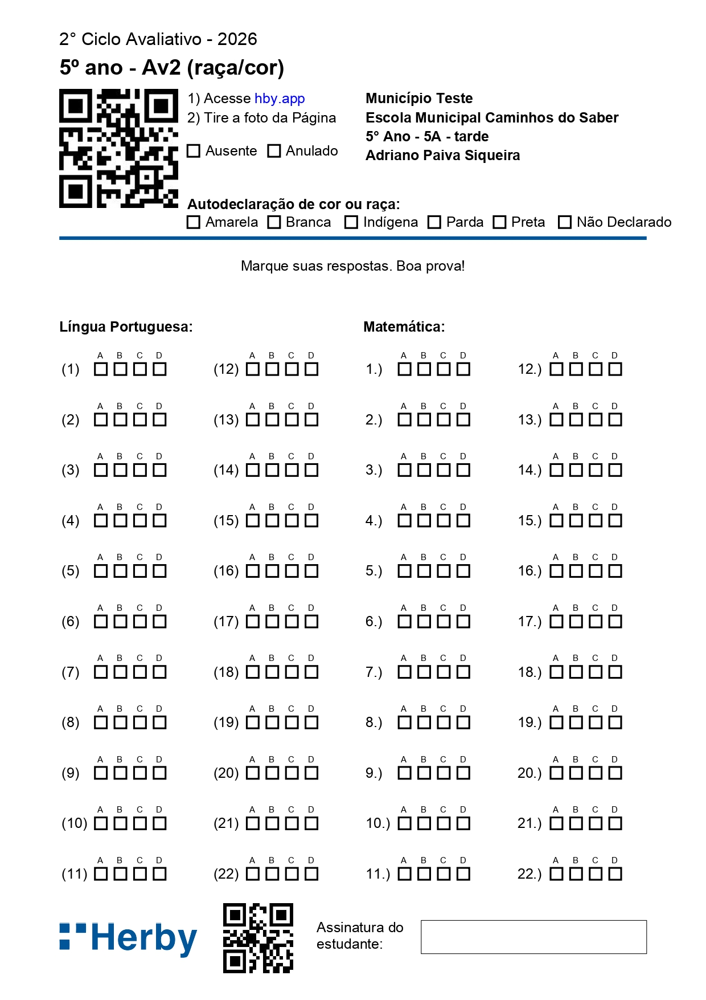
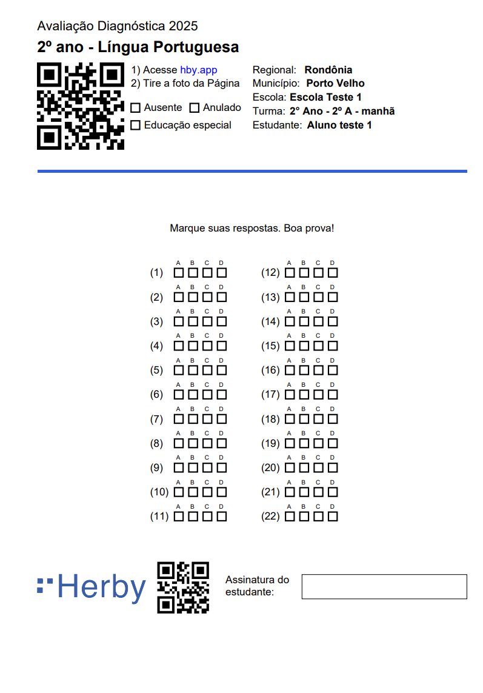
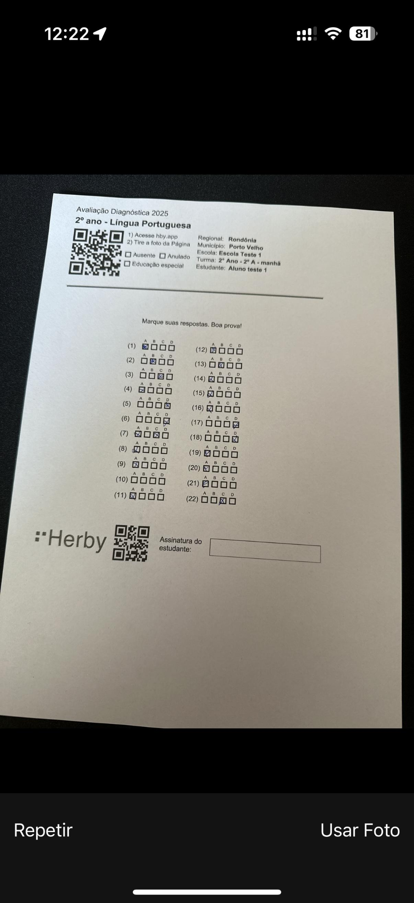

Processamento por Foto dos Cartões de Respostas
Correção dos cartões de respostas pelo celular: leitura do QR Code, foto do cartão, validações automáticas e resultado na hora.
Sobre o Smartphone
Por que a {{herby.produto}} funciona em qualquer tipo de aparelho, desde que possua câmera e acesso à internet?
- Não é preciso baixar aplicativo da loja e por isso podem ser usados dispositivos de qualquer marca e sistema operacional.
- O resultado é processado em nuvem e por isso não sobrecarrega o funcionamento do aparelho.
- As fotos não ficam armazenadas no celular e por isso não sobrecarrega a memória.

Correção por foto
O profissional indicado pela escola realizará o processamento dos cartões, com o celular.
Em apenas três passos, o Cartão é corrigido e vocês já têm o resultado, imediatamente:

- Escanear o QR Code (como o cardápio de um restaurante) e clicar no link que irá aparecer.
- Tirar uma foto do Cartão de Respostas.
- Acessar os resultados.
Correção por foto
O profissional indicado realizará o processamento dos formulários, com o celular.
Em apenas três passos, o Cartão é corrigido e vocês já têm o resultado, imediatamente:
- Escanear o QR Code (como o cardápio de um restaurante) e clicar no link que irá aparecer.
- Tirar uma foto do Cartão de Respostas.
- Acessar os resultados.
Ler o QR Code
Apontar a câmera do celular para o QR Code do Cartão de Respostas já preenchido e clicar no link que irá aparecer.
E se o link não aparecer? Acessar {{herby.url_scan}} no seu navegador de internet e realizar o escaneamento direto por lá.



Fotografar o cartão
Clicar no ícone câmera, que aparece na tela do celular, e fazer uma foto do cartão.
É importante que a imagem contemple a folha toda, inclusive o nome do estudante.
Nesse passo, a {{herby.produto}} realiza algumas validações e, logo em seguida, exibe a foto que acabou de ser tirada, também na tela do celular.
Fotografar o formulário
Clicar no ícone câmera, que aparece na tela do celular, e fazer uma foto do formulário.
É importante que a imagem contemple a folha toda, inclusive o QR CODE.
Nesse passo, a {{herby.produto}} realiza algumas validações e, logo em seguida, exibe a foto que acabou de ser tirada, também na tela do celular.
Conferir a foto
Depois de capturar uma boa foto, você deve clicar em Usar Foto ou Ok.
E se a imagem cortar alguma parte do cartão ou não estiver nítida?
Fique tranquilo(a). Você pode clicar em Repetir e fazer uma nova foto!
